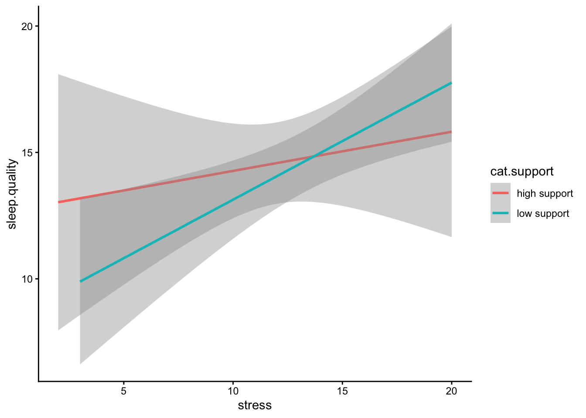
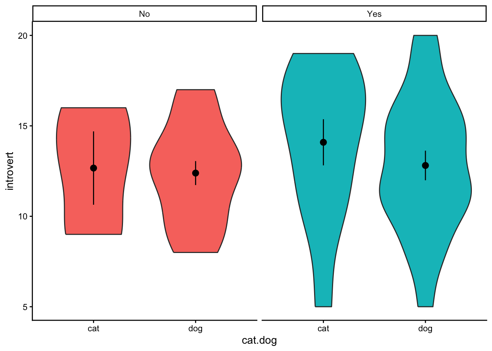

Content
Before we begin…
Remember, whenever we analyse data, we will roughly be following this procedure:
- Clean the data for analysis.
- Visualise the data.
- Run the statistical test.
- Write-up analysis.
We will be using the following packages. If this is your first time using these packages, remember to install them before loading the packages.
library(tidyverse)
library(lm.beta)
library(effectsize)Reminder: Moderation (Interaction Effects)
As covered in the Lecture series, moderation is when the effect of an IV (predictor) on the DV (outcome) depends on another IV (moderator). To begin with, we can test for an interaction effect in a linear regression. Linear regression is ideal when the the predictor, moderator, and outcome variables are all continuous.
In the example below, we will extend the regression we conducted last week and test the hypothesis that the association between sleep quality and stress is moderated by social support (for instance, the relationship between poor sleep quality and stress is stronger (more positive) for participants low in social support).
Regression with Interaction Effect
1. Clean the data for analysis.
First we must calculate the scores for each scale in the analysis
from the individual items. As we have done previously, we can do this by
using the mutate() function. The code below is the same as
the code we used last week.
data1.vars <- data %>%
mutate(stress = stress.1 + stress.2 + stress.3 + stress.4 + stress.5,
support = support.1 + support.2 + support.3 + support.4 + support.5,
sleep.quality = sleep1 + sleep2 + sleep3 + sleep4 + sleep5) %>%
dplyr::select(student.no,stress,support,sleep.quality)Centering and Standardising Variables
When including interaction terms in a linear regression, including
uncentered variables can be problematic as it can lead to
multicollinearity issues. In order to center the variables, we can use
the scale() function. The scale() function
expects a numeric vector. There are two additional arguments called
center and scale. If center is
set to TRUE, but scale is set to
FALSE, the scale() function will output the
‘centred’ variable. If both arguments are set to TRUE, the
scale() function will return a ‘standardised’ argument.
Because of a quirk with the scale() function, we also
need to tell R that the output is a vector. We can do this by wrapping
the results from the scale() function inside a
c() function.
You can see the scale() function in action below:
v <- c(3,32,5,6,12,59,96)
#Get the centered variable.
c.v <- c(scale(v,center = TRUE,scale = FALSE))
c.v## [1] -27.428571 1.571429 -25.428571 -24.428571 -18.428571 28.571429 65.571429#Get the standardised variable.
z.v <- c(scale(v, center = TRUE,scale = TRUE))
z.v## [1] -0.7782022 0.0445845 -0.7214583 -0.6930863 -0.5228546 0.8106273 1.8603896We can use this combination of the scale() and
c() functions within the mutate() to calculate
the standardised/centred variables of columns in our data.frame:
#Compute centred variables for analysis.
data1.clean <- mutate(data1.vars,
c.stress = c(scale(stress,center = TRUE,scale = FALSE)),
c.support = c(scale(support,center = TRUE,scale = FALSE))) %>%
#Compute standardised variables.
mutate(z.sleep.quality = c(scale(sleep.quality,center = TRUE,scale = TRUE)),
z.support = c(scale(support,center = TRUE,scale = TRUE)),
z.stress = c(scale(stress,center = TRUE,scale = TRUE)))2. Visualise the data
Interactions can often be difficult to intuit from just looking at
the numbers in the model. Therefore, it is almost always necessary to
visualise the data. The most common way to plot an interaction is to
split the data set in two according to the moderator: one with
participants who score high on the moderator, and the other with
participants who score low on the moderator. We can categorise
participants based on whether they score above or below the mean on the
variable (like we will do in our example), but you can also use the
median if that’s more appropriate. In our example, we will split the
data into participants who are above and below the mean on social
support. We can do this by creating a new variable using the
ifelse() function within the mutate()
function.
The ifelse() function works by first specify a condition
as the first argument. The second argument is what happens if data from
a participant meets that condition. The third argument is what happens
if a participant does not meet that condition. So in the code below, we
are creating a new variable called ‘cat.support’. We want to categorise
support into two levels, so the condition in the ifelse()
function is z.support > median(z.support). Here, we are
splitting the data based on the median of z.support.
Participants who meet this condition are in the “high support” group,
while those that are not are in the “low support” group.
plot.data <- mutate(data1.clean,cat.support = ifelse(z.support > median(z.support),"high support","low support")) %>%
drop_na(cat.support)We then can plot the regression line adding in a ‘group’ and ‘colour’ aesthetic to separate our data of participants with high and low support.
ggplot(plot.data,mapping = aes(x = stress,y = sleep.quality,group = cat.support,colour = cat.support)) +
geom_smooth(method = "lm") +
theme_classic()
Even better is if can visualise the raw data in a scatterplot:
ggplot(plot.data,mapping = aes(x = stress,y = sleep.quality,group = cat.support,colour = cat.support)) +
geom_smooth(method = "lm") +
geom_point() +
theme_classic()3. Run statistical test
Recall that interaction effects are the multiplication of the two variable. Therefore, to specify an interaction, we change the formula we specify to include the multiplication of the variable whose interaction we are interested in. For the unstandardised model, make sure you include the centred variables in the formula.
#Unstandardised Model
model1 <- lm(sleep.quality ~ c.stress*c.support,data = data1.clean)
summary(model1)##
## Call:
## lm(formula = sleep.quality ~ c.stress * c.support, data = data1.clean)
##
## Residuals:
## Min 1Q Median 3Q Max
## -10.8005 -2.7535 -0.4141 3.0693 9.0685
##
## Coefficients:
## Estimate Std. Error t value Pr(>|t|)
## (Intercept) 14.14973 0.50119 28.232 < 2e-16 ***
## c.stress 0.48334 0.12595 3.838 0.000255 ***
## c.support -0.05591 0.09140 -0.612 0.542580
## c.stress:c.support -0.02453 0.02068 -1.186 0.239259
## ---
## Signif. codes: 0 '***' 0.001 '**' 0.01 '*' 0.05 '.' 0.1 ' ' 1
##
## Residual standard error: 4.382 on 76 degrees of freedom
## Multiple R-squared: 0.2068, Adjusted R-squared: 0.1755
## F-statistic: 6.605 on 3 and 76 DF, p-value: 0.0005023Looking at the output above, notice how R automatically includes the
main effects in the model. In most cases, you should include the
separate main effects when investigating an interaction, but in the odd
occasion when you want to include the interaction effect without the
main effect, you can specify it using the : symbol. In
other words:
sleep.quality ~ stress*support is identical to
sleep.quality ~ stress + support + stress:support
Above are the unstandardised coefficients. However, in order to
report in APA format, we require the standardised coefficient. Similar
to with an ordinary regression, we can use the lm.beta()
function to get the standardised coefficients, like here:
#Standardised Model
model1 %>%
lm.beta() %>%
summary()##
## Call:
## lm(formula = sleep.quality ~ c.stress * c.support, data = data1.clean)
##
## Residuals:
## Min 1Q Median 3Q Max
## -10.8005 -2.7535 -0.4141 3.0693 9.0685
##
## Coefficients:
## Estimate Standardized Std. Error t value Pr(>|t|)
## (Intercept) 14.14973 NA 0.50119 28.232 < 2e-16 ***
## c.stress 0.48334 0.40200 0.12595 3.838 0.000255 ***
## c.support -0.05591 -0.06759 0.09140 -0.612 0.542580
## c.stress:c.support -0.02453 -0.12810 0.02068 -1.186 0.239259
## ---
## Signif. codes: 0 '***' 0.001 '**' 0.01 '*' 0.05 '.' 0.1 ' ' 1
##
## Residual standard error: 4.382 on 76 degrees of freedom
## Multiple R-squared: 0.2068, Adjusted R-squared: 0.1755
## F-statistic: 6.605 on 3 and 76 DF, p-value: 0.00050234. Write-up analysis.
Given that a moderation is exactly the same as a regression, we require the same information to do the write-up. As a reminder, here are the components you need to write up a regression:
For the model, you need the following information:
- the R-squared statistic.
- the F-statistic and associated degrees of freedom.
- the p-value for the model.
For each predictor, you need the following information:
- the standardised coefficient.
- the t-statistic.
- the p-value for that coefficient.
As mentioned last week, with more than one predictor in the model, it may make more sense to report the statistics in a table. This includes models with interaction effects (in the case above, the interaction effect is our third predictor).
Here is an example of the write-up:
We used a linear regression to predict sleep quality from the level of perceived stress, level of social support, and the interaction between the two. We found that model explained 20.68% of the variance (F(3,76) = 6.6, p = 0.001). Regression coefficients are reported in Table 1. There was a significant, positive main effect of stress on sleep quality. There was no significant main effect of social support on sleep quality. The interaction between perceived stress and social support was not significant.
Table 1. Regression coefficients for linear model predicting stress.
| predictor | beta | t | p-value |
|---|---|---|---|
| Perceived Stress | 0.4 | 3.84 | 0 |
| Social Support | -0.07 | -0.61 | 0.543 |
| PS * SS | -0.13 | -1.19 | 0.239 |
Two-Way Between-Subjects ANOVA
A two-way ANOVA is used when you want to evaluate the effects of two categorical IVs (and the interaction between them) on a continuous DV. Much of what we have covered regarding a linear regression with multiple predictors applies with a two-way ANOVA, but with two categorical IVs. In the example below, we will test whether there is an association between between introversion and identifying as either a cat- or dog-person, and whether this association differs depending on whether you play video-games or not.
1. Clean the data for analysis.
clean.data2 <- data %>%
filter(cat.dog != "both") %>%
filter(cat.dog != "neither") %>%
filter(cat.dog != "") %>%
mutate( introvert = introversion2 + introversion5 + introversion7 + introversion8 + introversion10) %>%
select(introvert,video.games,cat.dog)2. Plot data
When plotting the data, we want to visualise the relationship between
introversion and cat-people/dog-people separated by the moderator -
whether participants play video-games or not. We can do this by adding a
facet_wrap() to our standard violin plot. Here, we only
need to specify which variable to separate the plot on.
ggplot(clean.data2,aes(x = cat.dog,y = introvert,fill = video.games)) +
geom_violin() +
stat_summary() +
facet_wrap(~ video.games) +
theme_classic() +
theme(legend.position = "none")
3. Run statistical test
The function to run a two-way ANOVA is the same as a one-way ANOVA:
aov(). R is smart enough to determine which statistical
test to run based on how many IVs are in the formula. The formula works
the same as an interaction in a regression, where both categorical IVs
are “multiplied” together. R will automatically include the main effects
for each IV and the interaction. Also, similar to the one-way ANOVA, in
order to get output that is interpretable, you can pipe the result to
the summary() function.
aov(introvert ~ cat.dog*video.games,data = clean.data2) %>%
summary()## Df Sum Sq Mean Sq F value Pr(>F)
## cat.dog 1 0.7 0.714 0.049 0.825
## video.games 1 25.6 25.629 1.770 0.190
## cat.dog:video.games 1 5.5 5.528 0.382 0.540
## Residuals 45 651.5 14.477Similar to a one-way ANOVA, the two-way ANOVA will tell you whether or not there is a difference, but it will not tell you where that difference is. In order to determine this, you will need to calculate summary statistics (e.g., means for each cell) and conduct follow-up comparisons.
Calculate Effect Sizes (Partial Eta-Squared)
To calculate an effect size for a two-way ANOVA, we can use the same
eta_squared() that we covered when discussing the one-way
ANOVA in Demonstration 5. However, for a two-way ANOVA, since we have
multiple IVs, the effect size being estimated is a partial eta-squared.
Again, we can pipe the output of the aov() function into
the eta_squared() function:
aov(introvert ~ cat.dog*video.games,data = clean.data2) %>%
eta_squared()## # Effect Size for ANOVA (Type I)
##
## Parameter | Eta2 (partial) | 95% CI
## ---------------------------------------------------
## cat.dog | 1.10e-03 | [0.00, 1.00]
## video.games | 0.04 | [0.00, 1.00]
## cat.dog:video.games | 8.41e-03 | [0.00, 1.00]
##
## - One-sided CIs: upper bound fixed at [1.00].Calculate Summary Statistics
clean.data2 %>%
group_by(video.games,cat.dog) %>%
summarise(
count = n(),
mean = mean(introvert,na.rm = TRUE),
sd = sd(introvert,na.rm = TRUE)
)## # A tibble: 4 × 5
## # Groups: video.games [2]
## video.games cat.dog count mean sd
## <chr> <chr> <int> <dbl> <dbl>
## 1 No cat 5 15 1.87
## 2 No dog 15 13.7 4.89
## 3 Yes cat 8 12.4 3.16
## 4 Yes dog 21 12.7 3.41Multiple Comparisons
In the ANOVA table above, we do not find a significant interaction between playing video games and being a cat or dog person. However, we will conduct the comparisons below to determine as if there were a significant interaction. To assess a significant interaction, we would test whether the difference between cat-people and dog-people differs depending on whether they play video-games or not.
t.test(introvert ~ cat.dog,data = filter(clean.data2,video.games == "Yes" & (cat.dog == "cat" | cat.dog == "dog")))##
## Welch Two Sample t-test
##
## data: introvert by cat.dog
## t = -0.21729, df = 13.653, p-value = 0.8312
## alternative hypothesis: true difference in means between group cat and group dog is not equal to 0
## 95 percent confidence interval:
## -3.177459 2.594126
## sample estimates:
## mean in group cat mean in group dog
## 12.37500 12.66667t.test(introvert ~ cat.dog,data = filter(clean.data2,video.games == "No" & (cat.dog == "cat" | cat.dog == "dog")))##
## Welch Two Sample t-test
##
## data: introvert by cat.dog
## t = 0.83614, df = 17.313, p-value = 0.4145
## alternative hypothesis: true difference in means between group cat and group dog is not equal to 0
## 95 percent confidence interval:
## -1.925092 4.458426
## sample estimates:
## mean in group cat mean in group dog
## 15.00000 13.73333Mixed-Design ANOVA
In the two-way ANOVA above, both IVs were between-subjects variables.
However, the aov() can also run an ANOVA when one (or both)
IVs are within-subjects. These are known as mixed-designs ANOVAs (or
repeated-measures ANOVA if both IVs are within-subjects).
In the example below, we will test whether being a cat- or dog-person moderates the change in mood after viewing a cute cat video. Here, whether or not participants are a cat- or dog-person is a between-subjects categorical variable (as participants are either in one or the other), while time (before vs. after) is a within-subjects categorical variable. Our DV, mood, is measured on a continuous scale. As such, a mixed-design ANOVA is appropriate to test this interaction.
1. Clean data for analysis.
Below, we select the key variables for analysis and reshape the data.
Note that we will only include participants who identify as either a cat
or a dog-person (not neither or both). It is necessary to re-shape the
data since we are dealing with within-subjects variables. Also, since we
will be group data by the student.no, we will need to
ensure that R treats it as a factor. Also note that we have removed
participants with missing data.
mx.data <- data %>%
select(student.no,cat.dog,pre.mood,post.mood) %>%
filter(cat.dog == "cat" | cat.dog == "dog") %>%
drop_na(pre.mood) %>%
drop_na(post.mood) %>%
gather(key = "time",value = "mood",pre.mood,post.mood) %>%
mutate(student.no = as.factor(student.no))2. Visualise the data.
As when we have had a categorical IV and continuous DV, the best way to visualise the data is something like a violin plot. This is nearly identical to what we have previously covered, so we’ll skip this for now.
3. Conduct statistical test.
Again, we use the aov() function to run our mixed-design
ANOVA. However, in order to tell R which factor is within-subjects, we
need to adjust our formula to the following format:
DV ~ IV1*IV2 + Error(ID/IV2)So much like before, the DV is on the left of the ~
symbol, and the IVs are on the right. In order to denote that we are
interested in the interaction between the two, we continue to “multiply”
the IVs together. The new part of the formula comes where we add to the
formula the “Error” part above. This tells R 1) what is the
within-subjects variable, and 2) how that within-subjects variable is
grouped. In our example, condition is the within-subjects
variable, and since the data is within-participants, we will use
student.no to tell R which observations are linked.
aov(mood ~ time*cat.dog + Error(student.no/time),data = mx.data) %>%
summary()##
## Error: student.no
## Df Sum Sq Mean Sq F value Pr(>F)
## cat.dog 1 476 475.9 0.801 0.375
## Residuals 47 27925 594.2
##
## Error: student.no:time
## Df Sum Sq Mean Sq F value Pr(>F)
## time 1 789 788.6 7.397 0.00913 **
## time:cat.dog 1 1001 1000.5 9.384 0.00362 **
## Residuals 47 5011 106.6
## ---
## Signif. codes: 0 '***' 0.001 '**' 0.01 '*' 0.05 '.' 0.1 ' ' 1Notice in the output above that there are two ANOVA tables. The first
is the between-subjects effects, which reports the main effect for
cat.dog on mood. In the example above this is not
significant, indicating that, overall, there was no difference in mood
between the two conditions (as should be expected).. The second table
has the within-subjects effects. This includes the main effect of
time, plus the interaction between our two IVs. In the
example above, the main effect of time is significant, indicating there
is an overall there was a change in mood after viewing the cute cat
video. The interaction is also significant, indicating that being a cat-
or dog-person influences the change in mood before and after the video
(we would expect that cat-people would show a greater increase in mood;
however, again, determining the nature of this interaction requires
post-hoc comparisons, or plotting the data)..
Within-Subjects ANOVA (also known as a Repeated-Measures ANOVA)
While we will not be going through an example of a within-subjects
ANOVA here, the method for conducting one is identical to both the
between-subjects and mixed-designs ANOVA above (i.e., using the
aov() function). The output is also similar to interpret;
however, unlike with the mixed-designs ANOVA where two separate tables
are given (one for the between-subjects effects and one for the
within-subjects effects), you are only given one table (i.e., only a
table for the within-subjects effects).